Taipei Highlights Before Longdong
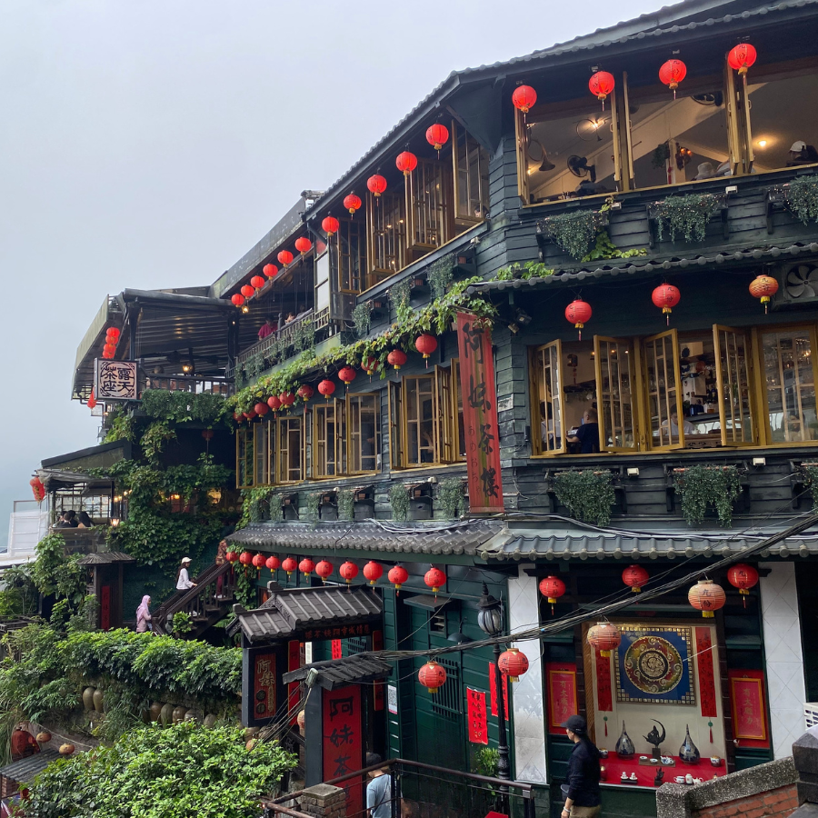
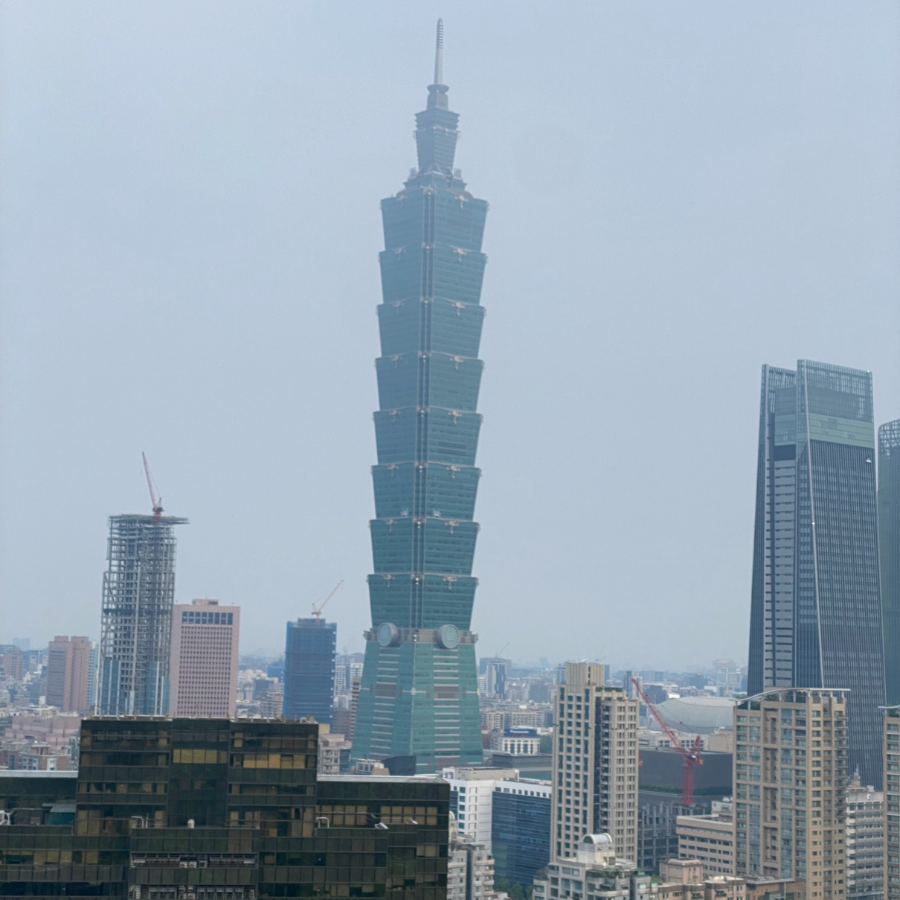
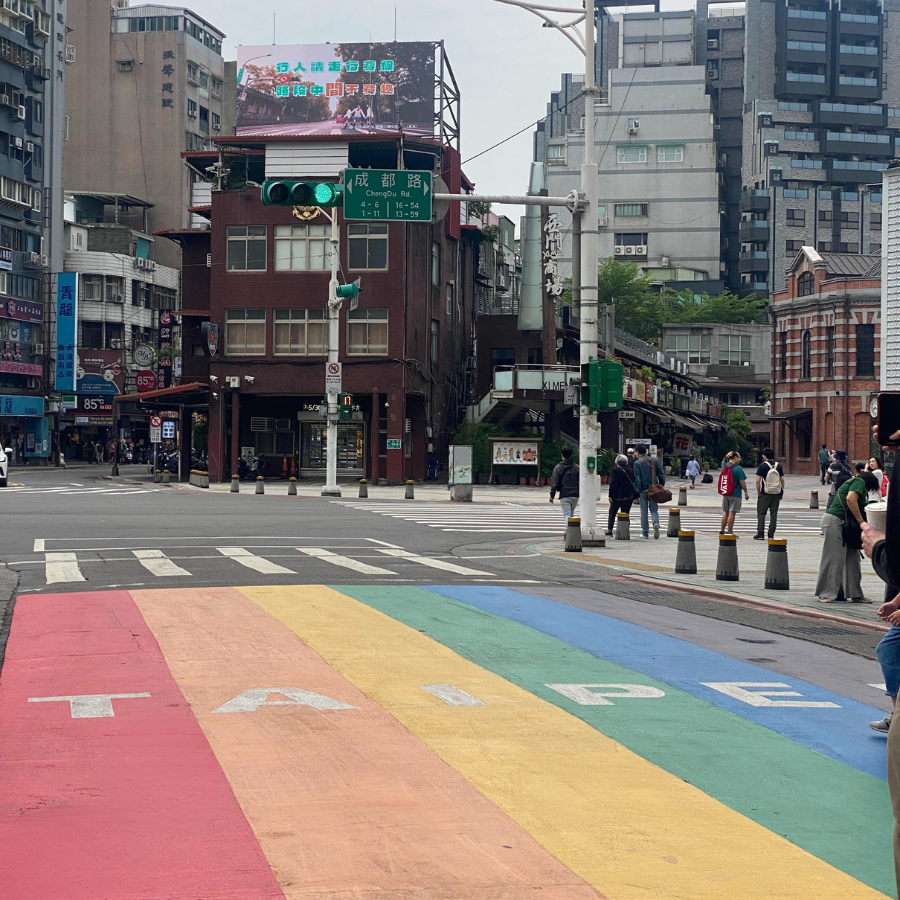
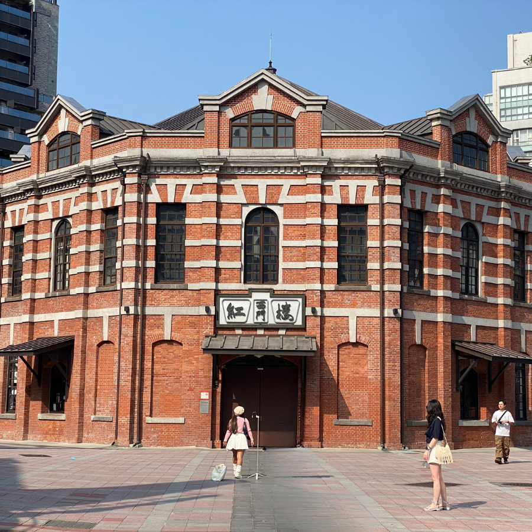
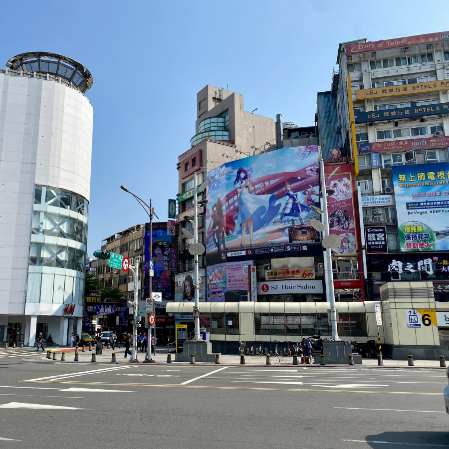
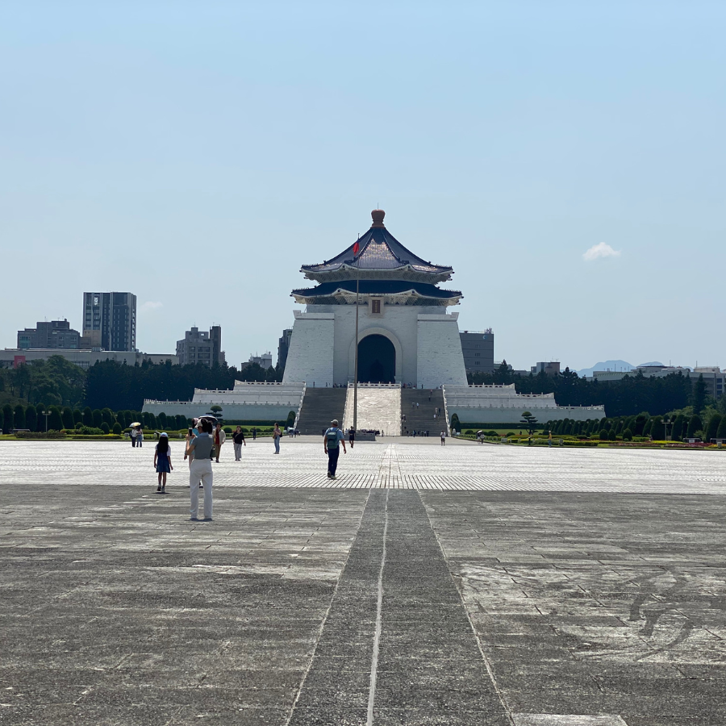
Welcome Back to ByrdieOnTheRocks!
Hey fellow climbers and curious wanderers, welcome back to ByrdieOnTheRocks! If you’ve followed my blog
before, you already know I always start with a quick intro and a few disclaimers. If you’ve seen this part
before, feel free to scroll down and jump into the story 👇
If you’re new here—hi!
This is my little corner of the internet where I journal travel stories, climbing experiences, and personal
reflections. I’m not a professional climber, and I don’t write technical route guides. I just share what it
feels like to explore the world as a curious traveler and an amateur climber who’s also learning to build
websites along the way. It’s a mix of chalk, code, and a lot of honesty.
While I do include some tips here and there, I always recommend doing your own research, checking conditions,
talking to certified guides, and putting safety first whenever you plan a climbing trip.
A Quick Look Back!
If you missed my last post, I wrote about my first international climbing trip in
KL, Malaysia. It was an incredible experience that opened my eyes to a different way
of exploring a country. Instead of chasing the usual tourist spots, I discovered local culture, landscapes,
and people through climbing. It felt meaningful in a way that’s hard to put into words.You can read that blog
here, if you want to catch up and see
how that trip inspired me to keep exploring Asia.
What Drew Me to Climb in Taiwan
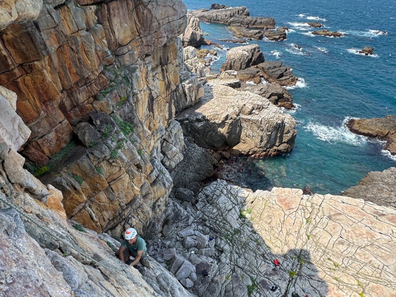
After I returned from Kuala Lumpur, I started thinking about where to go next. I wanted to visit a country I had
never been to before, and I was also hoping to find a climbing destination that felt a little different from what
we usually see in Southeast Asia.
Then I remembered someone at the gym casually mentioning how amazing climbing in
Taiwan
was supposed to be. So I did a bit of research, and I was not ready for how beautiful it looked. I came
across a place called
Longdong, which is located in the coastal Gongliao District of New Taipei City.
The moment I saw the photos of Longdong’s sea cliffs, crystal-clear water, and golden rock formations, I knew this
was where I wanted to go. Every block of stone looks like it holds a piece of Earth's geologic timeline. The
scenery was breathtaking, and the climbing looked both challenging and peaceful at the same time.
Traveling Solo With Intention
This trip was also a personal challenge. I wanted to travel solo, not just to climb, but to really experience the
journey fully. As you might already know, I am not focused on climbing the hardest grades. I climb because I love
the process, the movement, the views, and the sense of freedom. My skill level still limits me from climbing on my
own in unfamiliar outdoor areas, and that is something I respect. This trip was partly about enjoying the moment,
and partly about learning more. So I started searching for a certified climbing instructor in Taiwan who could
guide me safely and also teach me new skills.
Meeting QX
During my research, I came across an instructor named QX. His name sounded familiar, and I later realized we
had some mutual climbing connections in Bangkok. But what really caught my attention was his solid background,
his professional approach, and the genuine passion he brings to climbing.
QX is an AMGA Certified Rock Guide, an Assistant Alpine Guide, and a NZSIA Ski Instructor. He is originally
from Singapore and has been living in Taiwan for many years. You can learn more about him on his
official website.
As someone who is still learning and climbing at a basic level, having a professional instructor made all the
difference. Climbing in a new country means dealing with different weather conditions, unfamiliar terrain, and
rock types I am not used to. I also wanted to start learning multi-pitch and trad climbing, and QX offers both
of these courses. For more details about his programs, visit his Taiwan rock climbing site
here.
He answered all my questions clearly and made me feel confident throughout the planning process. I could tell
that he is not only experienced but also passionate about teaching. I will share more about what it was like
to climb with him in Part Two of this Taiwan series.
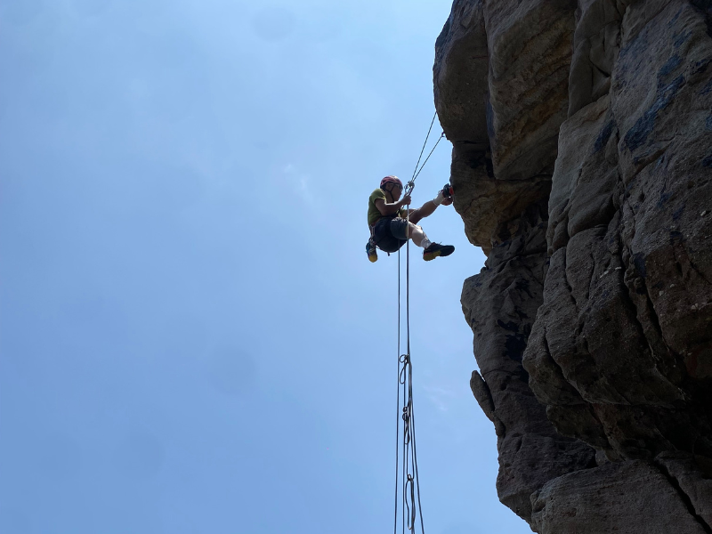
Arriving in Taiwan
After about four months of planning, my trip finally began in early May 2025. I took a red-eye flight and landed
in Taipei early in the morning. My plan was to explore the city a bit before checking into my hotel in
Ximending, where the well-known Rainbow Street is located. However, I had not slept on the
plane and check-in wasn’t until 3 p.m.
So I wandered around the city on zero sleep. Rookie move. But surprisingly, it turned out to be a great
experience. It was my first time in Taipei, and even in my half-dazed state, I found it fun and exciting.
Getting Around Taipei
One of the first things I bought was a
2-day MRT pass, which includes unlimited train rides within the city and even covers trips
between the airport and downtown Taipei. Although the pass is valid for two days, the airport return trip remains
available even after the pass expires. I highly recommend getting this pass if you're planning to explore the
city.
City Wandering and Climber Finds
After a bit of sightseeing, I went climbing gear shopping in a Taipei neighborhood called Xitun District. I was
genuinely surprised by how many outdoor stores there were, and the prices were actually pretty reasonable. I
treated myself to some new gear to prepare for the upcoming climbing days in Longdong.
One thing I always try to do when traveling is visit a local climbing gym. In Taipei, most gyms are
bouldering-focused and conveniently located near MRT stations. But I was in the mood for something taller, so I
searched for a gym with higher walls. I ended up choosing
T-UP Zhonghe, which was a little harder to get to. I took the MRT to the nearest station
and then transferred to a bus. It took a bit more effort, but the gym made it completely worth it.
The gym had a tall lead wall and a good amount of space. Since I was traveling solo, I climbed only on the
auto-belay routes, which were limited but still fun. I had a great time there and really enjoyed being part of the
local climbing scene, even for just a short while.
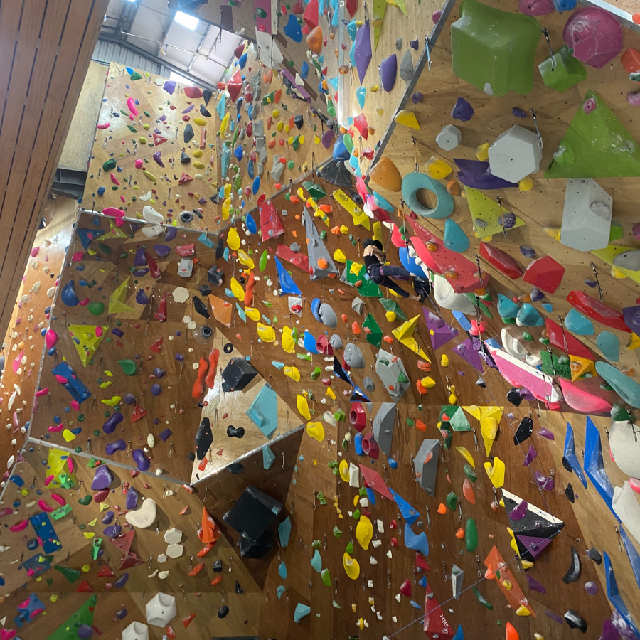
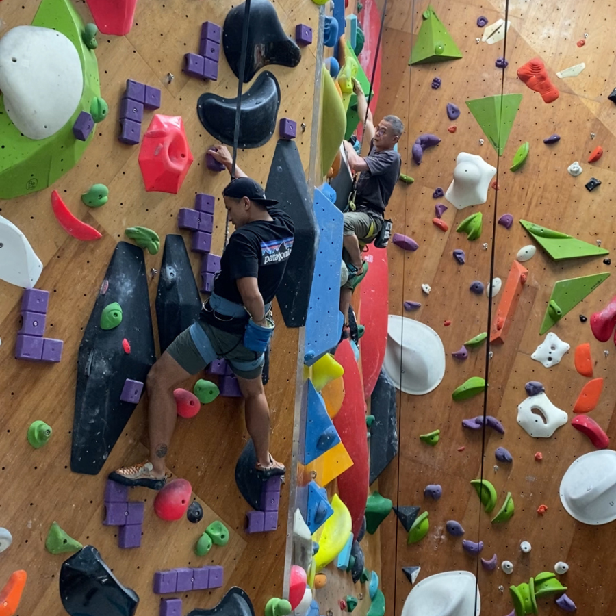
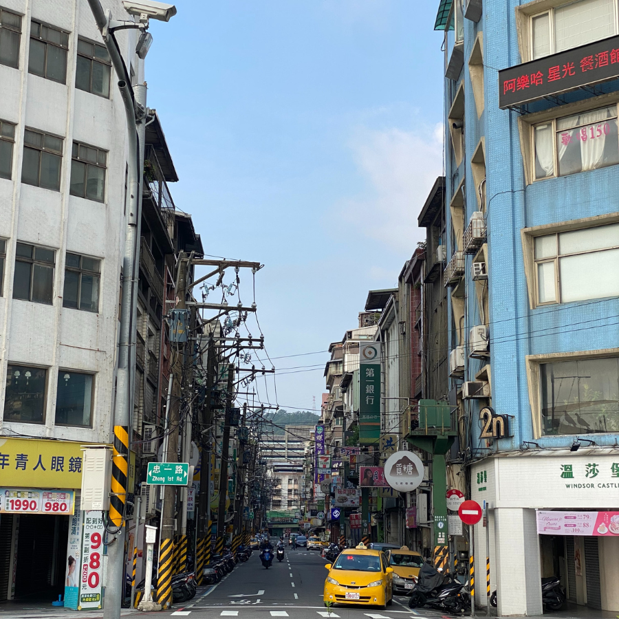
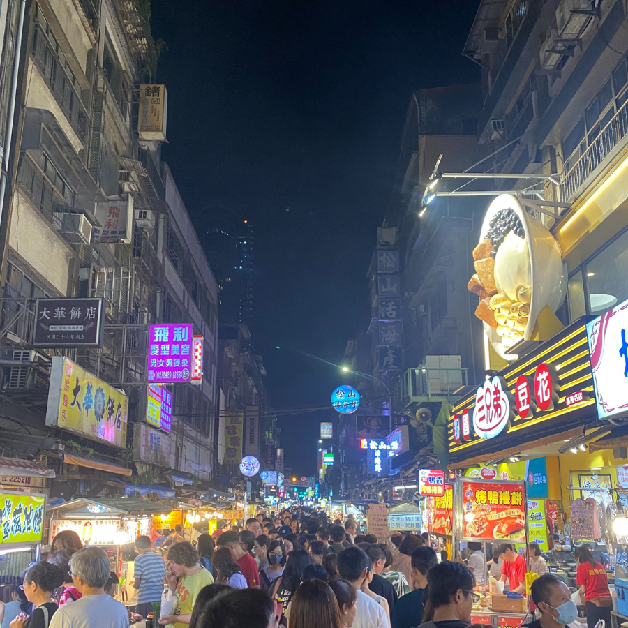
My Second Day in Taipei
My first day in Taiwan was amazing, although it left me absolutely exhausted. I decided to get a good night's
sleep and planned to wake up early to explore more of the city the next morning.
I started the day with a short hike to
Elephant Mountain, which offers one of the most iconic views of Taipei city and Taipei 101.
The trail is about 1.5 kilometers long and very accessible. Thanks to Taipei’s great public transportation system,
I simply took a morning bus from Ximending, which got me there in about 30 minutes.
The trail is well maintained and makes the experience feel peaceful and refreshing. The view at the top was worth
every step. I never realized how great Taiwan’s outdoor activity scene is. From what I have seen so far, people
here are active and always on the move. I started to really like it here.
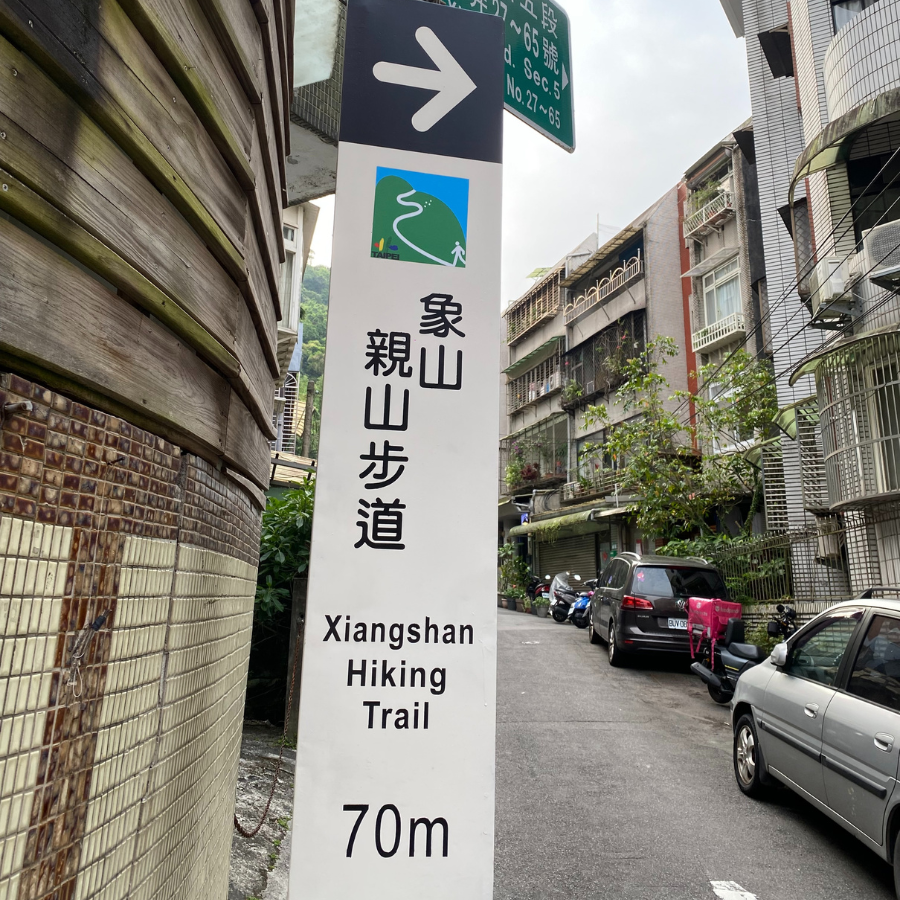
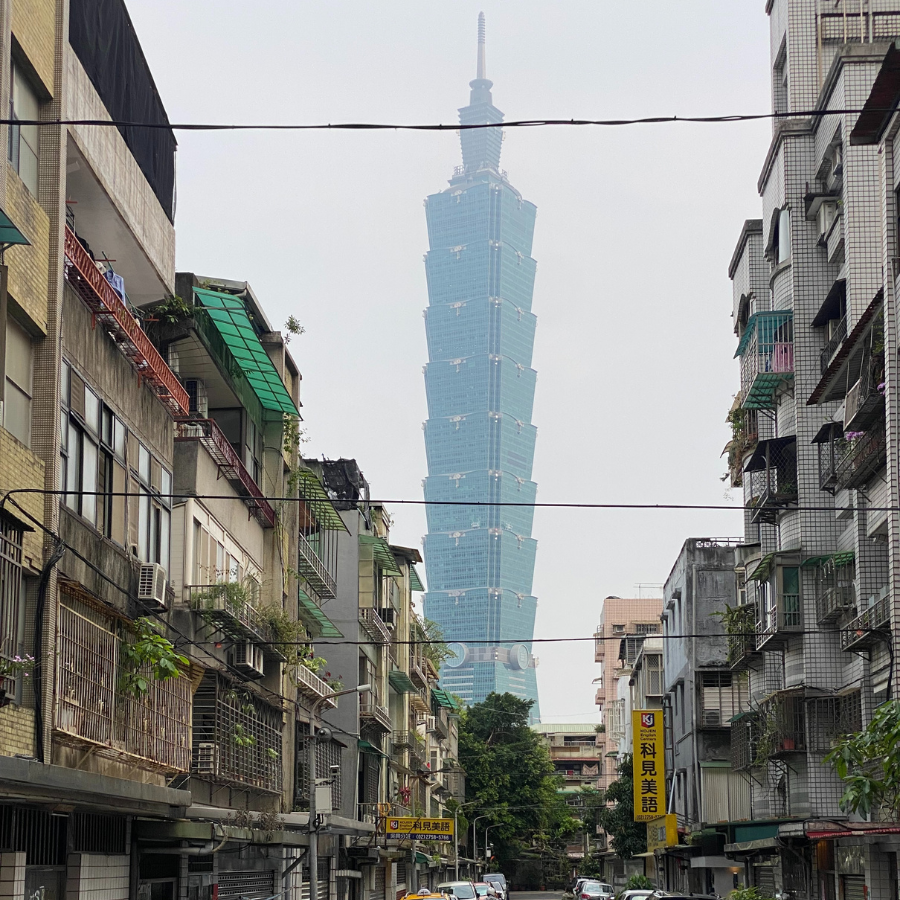
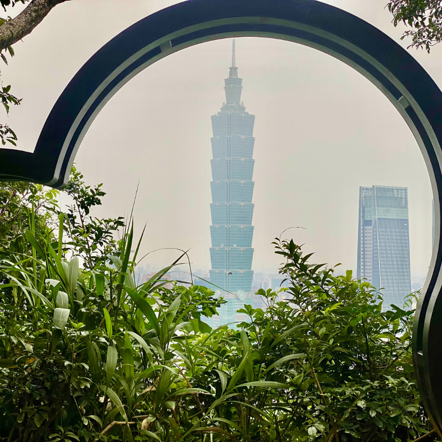
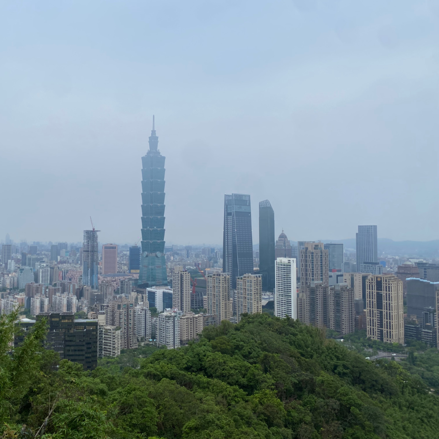
Next Stop: Keelung
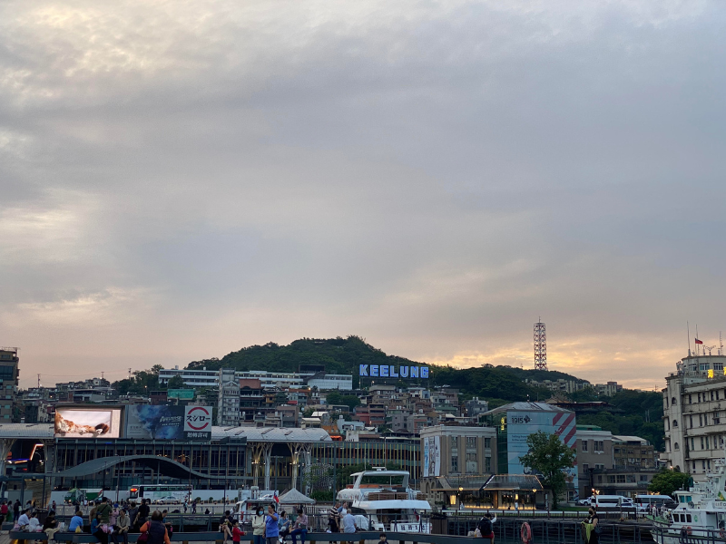
That afternoon, after finishing my hike, I began the journey to my next stop before the climbing days began. I was headed to
Keelung, a coastal city QX had recommended, where I planned to stay for the next three days.
The train ride itself was an experience. I passed by quiet little towns and stretches of lush green fields framed by distant mountains. The rhythm of the train and the peaceful scenery outside made the ride feel calm and unhurried.
Even though I was tired, something about Keelung’s atmosphere made me feel quietly excited. I hadn’t even made it to the night market yet, but I already had a feeling this city was going to leave an impression.
The train ride itself was an experience. I passed by quiet little towns and stretches of lush green fields framed by distant mountains. The rhythm of the train and the peaceful scenery outside made the ride feel calm and unhurried.
Even though I was tired, something about Keelung’s atmosphere made me feel quietly excited. I hadn’t even made it to the night market yet, but I already had a feeling this city was going to leave an impression.
Keelung quickly became one of my favorite places (which I’ll share more about in the next post). Taiwan’s public transportation really impressed me. Getting from Taipei to Keelung was smooth and affordable. I took the MRT from Ximen to Taipei Main Station, then transferred to a local train that took me directly to Keelung. The entire trip took just over an hour, and the views from the window made it feel even shorter.
Wrapping Up Part One
My first two days in Taiwan have been more than I could have hoped for. I got to experience so much and be truly
present with myself. Exploring a new country and culture through climbing feels completely different from any
other kind of travel I have done.
Climbing brings me a sense of movement and discovery. It helps me focus on the process instead of rushing to the
next destination. My personal highlight of this trip is definitely the time I spent climbing in Longdong, and that
part is coming next.
I loved every minute of it, from the scenic drive along the coast to arriving at a climbing spot with one of the most stunning views I have ever seen. I’ll be diving into all of that in Part Two of my Taiwan series, along with how I learned multi-pitch and trad climbing above the sea.

A view from Longdong where Part Two begins
Until then, keep climbing, keep exploring!
ByrdieOnTheRocks :)
×
👋 Hey there! This blog is just me sharing my climbing adventures and learning to code along the way. It’s not pro advice — just good vibes and personal stories!